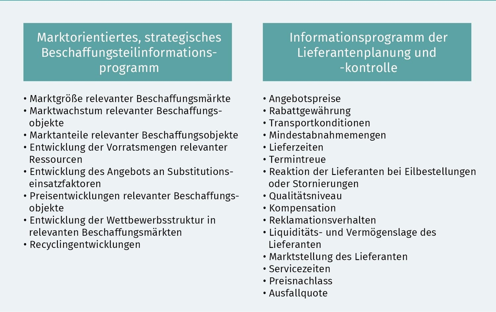

Die Beschaffungsmarktforschung ist ein systematischer Prozess zur Erfassung der Bedingungen und Vorgänge auf den Beschaffungsmärkten eines Unternehmens. Es geht darum, sowohl gesamtwirtschaftliche als auch einzelwirtschaftliche Informationen über bekannte und unbekannte Lieferanten zu sammeln. Dieser Prozess kann entweder durch die Auswertung bereits vorhandener Daten (sekundäre Beschaffungsmarktforschung) oder durch die Erhebung neuer Informationen (primäre Beschaffungsmarktforschung) erfolgen.
Die Beschaffungsmarktforschung verfolgt mehrere Ziele, um die Beschaffungsprozesse eines Unternehmens zu optimieren:
Unter den marktökonomischen Gesichtspunkten der Beschaffungsmarktforschung werden verschiedene Aspekte untersucht, wie die Verfügbarkeit und Preisentwicklung von Beschaffungsobjekten, die Nachfrage anderer Unternehmen und die Erforschung von Beschaffungswegen im In- und Ausland.
Es wird zwischen Marktanalyse und Marktbeobachtung unterschieden. Die Marktanalyse konzentriert sich auf eine Momentaufnahme des Marktes, während die Marktbeobachtung langfristige Entwicklungen und Prognosen umfasst.
In der internationalen Beschaffung werden häufig fallweise sowie kontinuierliche Marktforschungen durchgeführt. Die Wahl der Methode hängt von der Bedeutung und der Strategie des Unternehmens ab.
Die Beschaffungsmarktforschung kann sich auf Eigenmärkte konzentrieren, also auf Märkte innerhalb der eigenen Fertigungsstufen, oder auf Vormärkte, die vorgelagert im Veredelungsprozess betrachtet werden.
Die Informationsbedürfnisse in der Beschaffungsmarktforschung lassen sich in produkt-, lieferanten- und länderbezogene Informationen unterteilen. Produktbezogene Informationen umfassen Qualität und Herstellungsverfahren der Beschaffungsobjekte, lieferantenbezogene Informationen betreffen die Kapazitäten und Markstellung der Lieferanten, während länderbezogene Informationen sich auf wirtschaftliche Rahmenbedingungen der Beschaffungsmärkte konzentrieren.
In der Beschaffungsmarktforschung werden verschiedene Arten von Informationen gesammelt:
Dieses Programm umfasst die Analyse der Marktgröße, des Marktwachstums und der Marktanteile relevanter Beschaffungsobjekte. Es untersucht die Vorratsmengen und die Preisentwicklungen der Beschaffungsobjekte sowie die Wettbewerbsstruktur in den relevanten Beschaffungsmärkten.
Hier werden verschiedene Aspekte wie Angebotspreise, Rabattgewährungen, Transportkonditionen, Mindestabnahmemengen und Lieferzeiten erfasst. Ebenso werden die Termintreue, die Reaktionszeit bei Eilbestellungen oder Stornierungen und die Qualitätsniveau der Lieferanten überprüft.
Die Beschaffungsmarktforschung spielt eine entscheidende Rolle in der strategischen Planung und Sicherstellung der optimalen Beschaffung von Gütern und Dienstleistungen. Sie bietet eine breite Palette an Methoden und Informationen, die individuell angepasst werden können, um die Beschaffungsprozesse zu optimieren und auf zukünftige Entwicklungen vorbereitet zu sein.